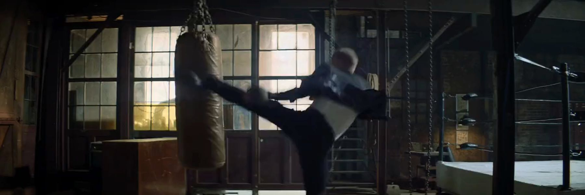

MVP Talent Network
Des célébrités sportives qui font la différence.
Athlètes, olympiens, légendes du sport et célébrités médiatiques pour vos conférences, campagnes et événements.
0 célébrités sportives
Réalisations
Les célébrités derrière des partenariats mémorables.
Célébrités en vedette
Quelques figures marquantes du réseau MVP.
Vous ne trouvez pas la bonne célébrité ?
Le réseau de MVP dépasse les célébrités sportives affichées en ligne. Parlez-nous de votre projet et nous identifierons les célébrités sportives qui correspondent à votre public, à vos objectifs et à votre campagne.
Parlez-nous de votre projet